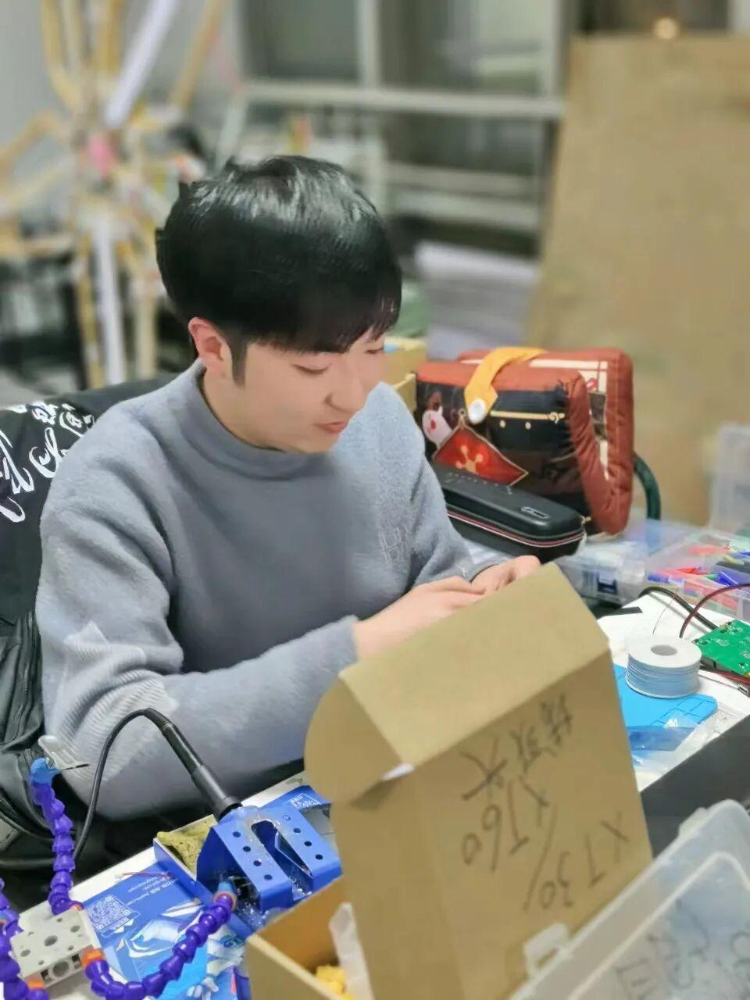
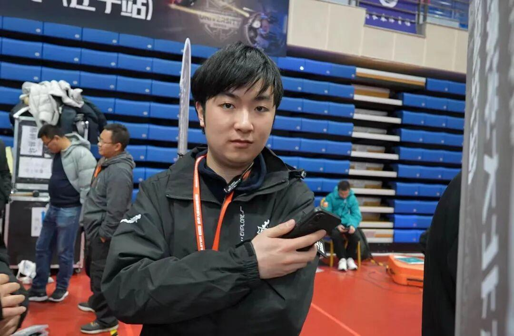

人物专访｜没有技术是没有未来的 — 陈显楷
用技术创造无限可能
硬件组组长专访
START

一场场赛事的背后，除了选手们的精彩表现，还有一群默默付出的幕后英雄。他们或许没有璀璨的星光，却是支撑整个战队运作的中坚力量。今天，我们有幸邀请到战队的硬件组组长，与我们一同探秘他们在战队中的角色和使命。

自我介绍

陈显楷
硬件组组长
Self-introduction
爱好RC模型船
大二电气工程专业

-灯哥、显卡

加入战队的初衷


“我一直想发掘并培养自己的特长。因此，我加入了战队，希望在比赛和项目的磨练中不断提升自己的技能和知识。我坚信，只有持续的学习和实践，才能不断地增长才干和储备知识。”
遇到的困难和收获

“刚刚加入战队时，我遇到了很多困难。面对一个全新的领域，我意识到自己的知识储备远远不够，很多专业术语和技术方法对我来说都是陌生的。在初期的学习和实践中，我常常感到苦恼和无助。然而，我没有放弃，而是选择了更加努力地学习。我阅读了大量相关书籍，观看了许多专业视频，还向战队里的前辈请教。渐渐地，我掌握了越来越多的技能和知识，最终成功地完成了许多项目。
在这个过程中，我认识了许多志同道合的人。他们来自不同的专业背景，却都有着共同的爱好和追求。我们一起讨论技术问题，一起研究比赛策略，一起分享生活中的点滴。我从他们身上学到了很多在学校里学不到的知识，也提高了自己的自我学习能力和团队合作精神。”
大赛感受

“参加比赛对我来说是一次非常有趣的经历。在这个过程中，我成功完成了自己的项目，这让我感到非常有成就感和满足感。比赛还让我更加深入地了解了硬件领域，让我对这个领域更加热爱和感兴趣。”

“未来，我希望能够考研进入华南理工大学深造，进一步提高自己的硬件水平。我相信，只要我坚持不懈地努力学习和实践，就一定能够实现自己的梦想。”


座右铭
没有技术是没有未来的，
没有学上是没有明天的。

随着采访的结束，我们对这位低调的守护者有了更深的了解。每一个队员都是战队的坚强后盾，都在默默付出，他们用专业和热情为梦想保驾护航。唯有热爱，才能在追逐梦想的道路上走得更远，也才能抵御岁月带来的漫长挑战。
END
推文|青唐三月
图片|电协信息部
审核|XX敏